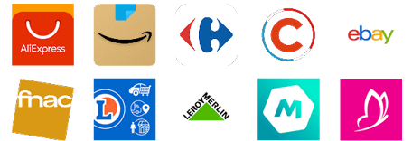
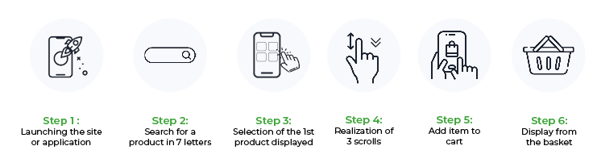
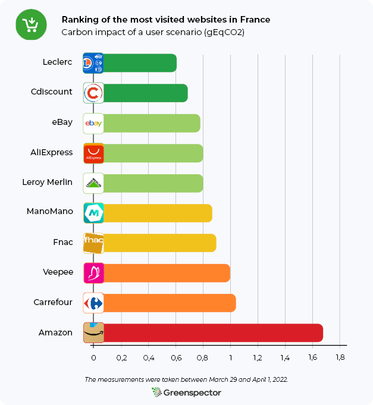
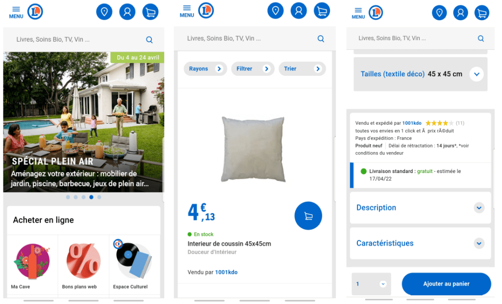
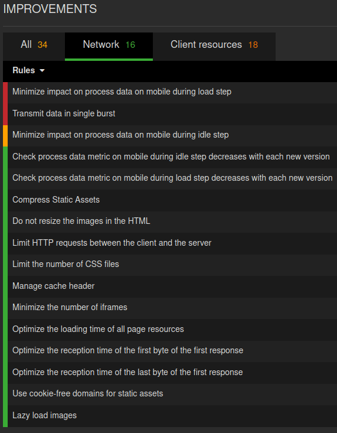
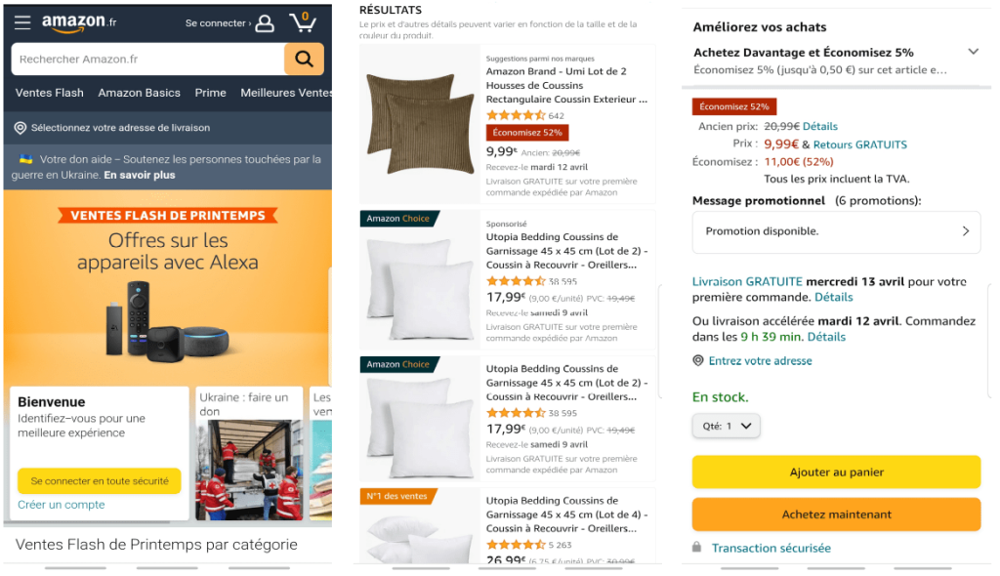
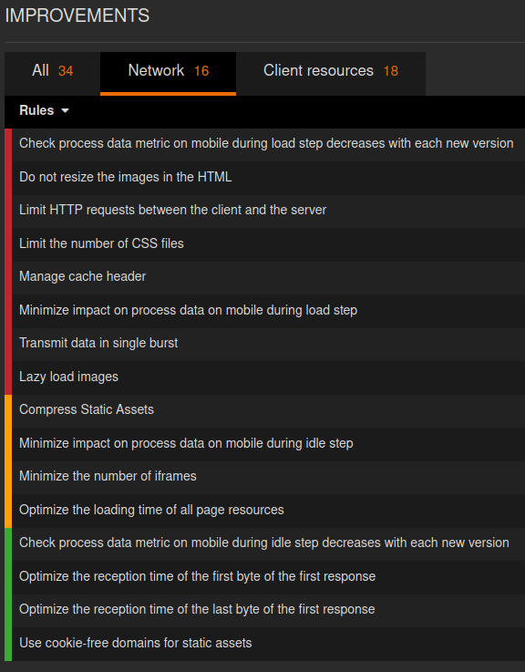
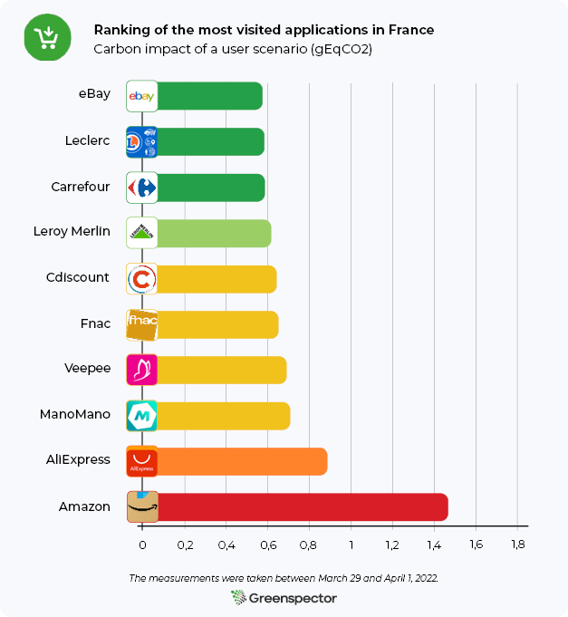
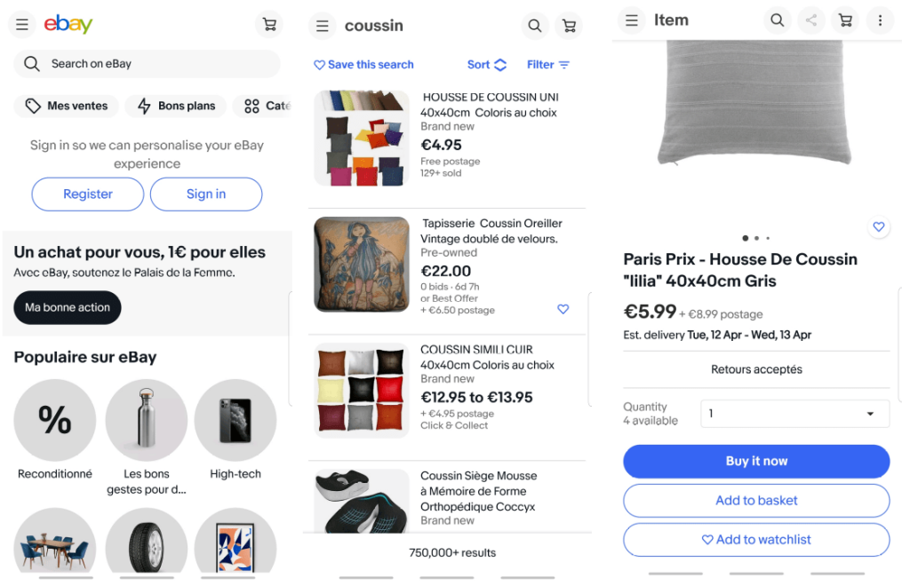
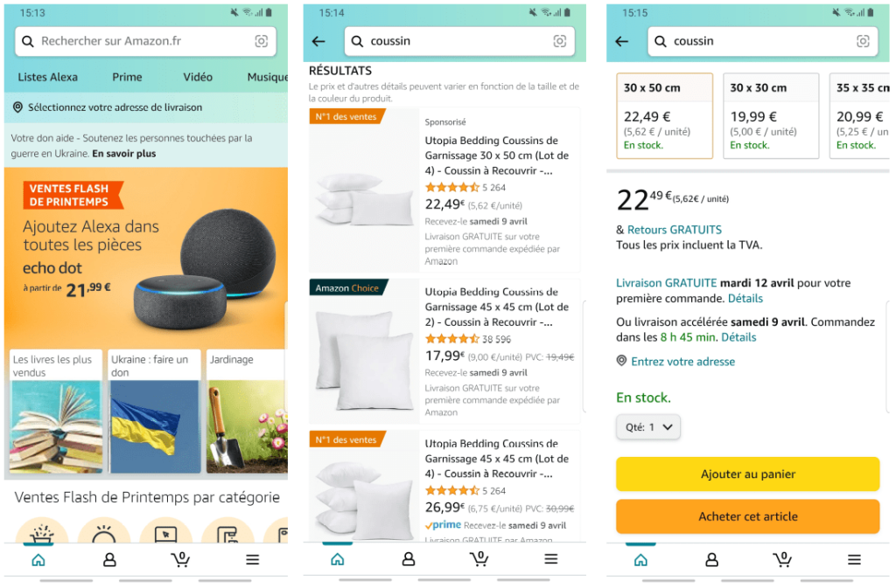

Introduction
The e-commerce market in France is experiencing very significant growth. E-commerce sales have increased from 57 billion in 2014 to 112.2 billion euros in 2021. The health crisis is partly responsible for this increase. It has considerably increased online shopping and created habits among the French. Among these sales, those on mobile have experienced impressive growth. They increased by 13% in 2021. Nearly one in two French people (48%) now make purchases via their phones. One in three French people (34%) buys via their phone at least once a month.
Quick access
Ranking of the most popular sites
Projections of carbon impacts
Ranking of the most popular apps
Conclusion
Results
Methodology
Shopping cart abandonment accounts for $18 billion in lost sales every year. Mobile abandonment rates are higher (97%) than desktop abandonment rates (between 70 and 75%). The reasons are multiple: the price, the shipping costs, the speed of delivery, the discounts available, but also the loading time of the site (Source). M-commerce sites and applications, therefore, have every interest in demonstrating performance and digital sobriety.
What about the ten most visited e-commerce sites and applications in France? What are the most frugal sites and applications on which to do your e-shopping in complete sobriety?
Choice of sites and applications
To determine which sites and applications to study, we relied on the ranking of e-commerce sites and applications produced by Médiamétrie and the Fevad (Federation of e-commerce and distance selling). These are the most popular sites and applications in France in the 2nd quarter of 2021.

This study’s distinguishing feature is that it is based on a common scenario that goes from the search and consultation of a product to the consultation of the basket before payment. Thus, we can be as close as possible to the real uses of Internet users and mobile users.

Ranking of the environmental footprint of the ten most popular e-commerce sites in France
The three least impacting sites are Leclerc, Cdiscount et eBay.
The three most impactful sites are Amazon, Carrefour et Veepee.
We observe more than 2.7 times more impact between the least impacting site (Leclerc) and the most impacting site (Amazon) in this ranking.
The average carbon impact of these ten websites is 0.92 gEqCO2 for an average duration of the scenario of 1 minute and 54 seconds, i.e. the equivalent of 8 meters travelled in a light vehicle.

Projection of carbon impacts over one month
It is estimated that 55% of global e-commerce traffic is done on mobile devices, compared with 39% on PCs and 6% on tablets (Source).
If we project the carbon impact of these ten e-commerce sites for an average of 37.41 million visits per month lasting 5 minutes and 54 seconds, this impact would be 439.6 tonnes of CO2eq per month (87.5 tonnes on mobile, 341.0 tonnes on PC and 11.1 tonnes on tablet). It is the equivalent of 98 times the circumference of the Earth travelled by light vehicle.
Regarding the best website in this ranking (Leclerc) for 9.99 million visits/month with an average duration of 3 minutes, this impact would be 37.0 tonnes of CO2eq per month (5.9 tonnes on mobile, 30 .3 tons on PC and 0.8 tons on a tablet). It is the equivalent of 8 times the circumference of the Earth travelled by light vehicle.
For the worst website in this ranking (Amazon) with 164,32 million monthly visits and an average duration of 8 minutes, the carbon impact would be 2639.4 tonnes of CO2eq (588.1 tonnes on mobile, 1978.4 tons on PC and 72.9 tons on tablet). It is the equivalent of 588 times the circumference of the Earth travelled by light vehicle.
The focus of our Greenspector experts on the soberest site: Leclerc
The Leclerc website stands out especially in terms of the stages of research, viewing a product and viewing the basket. Indeed, this site consumes little energy on these phases compared to its competitors. Only essential information is present on this search page (name of products, price, availability). When viewing the product sheet, customers have the option of adding the item quickly to their basket, and drop-down menus are provided for additional information. Also, this site exchanges the least amount of data to complete the scenario.

On the search page of a product, many good practices are applied. There are few network exchanges with 12 HTTP requests and a single CSS file. The images are lazy-loaded.
The focus of our Greenspector experts on the least sober site: Amazon
The Amazon website gets its poor ranking mainly from the research and viewing stages of a product. Indeed, this site consumes a lot of energy during these phases, and exchanges a lot of data. There are 9.10 MB of data exchanged for the research phase (compared to 1.03 MB for Leclerc), and 5.58 MB of data exchanged for the product sheet (compared to 0.18 MB for Leclerc). When searching, a lot of information appears (indication « Suggestions », « Sponsored », « Amazon Choice » or « No. 1 in sales », product name, rating, number of reviews, price, reduction, date of delivery). An autoplay advertising video even appears in the middle of the products. When viewing the product, a lot of information also appears (offers, delivery dates in case of free or accelerated delivery, product details, products frequently purchased together…). In addition, the customer is obliged to scroll before being able to access and click on the « Add to cart » button.

Going into more detail on the product search page, there are a lot of network exchanges with 109 HTTP requests and 9 CSS files. The deferred loading (lazy-loading) of images is not applied, which implies a loading of images not visible on the screen. This practice should be avoided because the user will not necessarily scroll to these images.
Ranking of the environmental footprint of the then most popular m-commerce apps in France
The three least impacting apps are eBay, Leclerc et Carrefour.
The three most impactful apps are Amazon, AliExpress et ManoMano.
We observe more than 2.8 times more impact between the least impacting app (eBay) and the most impactful app (Amazon) in this ranking.
The average carbon impact of these 10 applications is 0.69 gEqCO2 for an average duration of the scenario of 2 minutes and 1 second, i.e. the equivalent of 6 meters travelled in a light vehicle.


The eBay application takes its first place in the phases of launching the application and viewing the basket. Indeed, during these phases, this application consumes little energy. In addition, it exchanges little data over the entire duration of the scenario (only 0.53 MB).
The focus of our Greenspector experts on the least sober app: Amazon
Amazon once again finds itself in last place in the ranking, far behind its competitors. This result can again be explained by the research and visualization phases of the product, where this application consumes much more energy than the others. In terms of data exchanged, we observe 8.22 MB for research (compared to 0.23 MB for eBay) and 2.6 MB for the product sheet (compared to 0.13 MB for eBay).
Conclusion
Whether for the most visited websites or m-commerce applications in France, we see an impact almost three times greater between the soberest platform and the most impactful one.
It shows that by managing the information visible on the screen, the loading of images, the consumption of scripts and the data exchanged during the scenario differently, it is possible to reduce the environmental impact of a website and a mobile app.
As an e-shopper using his mobile, it is better to go through applications than websites. Indeed, websites have an average impact of 39% more on the scenario studied. Only AliExpress has a higher consumption on the app than on the website. However, applications have an effect on their download and updates. They are therefore to be preferred only in the event of regular orders.
In terms of digital sobriety, nothing will equal buying food products at the market and other products from local traders, of course!
Results
Ranking of the 10 most popular websites in France
[table “e-commerce-web-en” not found /]Ranking of the 10 most popular apps in France
[table “tableide-commerce-apps-en” not found /]Greenspector’s methodology
For each site and each application, measured on a Samsung Galaxy Note 8 (Android 9), the measurements were carried out using scripts using the GDSL (Greenspector Domain-Specific Language) language. This language makes it possible to automate actions to be carried out on a telephone. The measurements were taken between March 29 and April 1, 2022.
Detail of the scenario common to the 20 measures:
-Launch of the site or application
-30 second pause on the homepage
-Search for a product using the search bar, then view the products on offer
-Selection of a product, then visualization of its characteristics (details, opinions, etc.)
-Adding the product to the cart
-30 second pause on the shopping cart page
Each measurement is the average of 5 homogeneous measurements (with a low standard deviation). The consumption measured on the given smartphone according to a wifi type network may be different on a laptop PC with a wired network for example. For each of the iterations on the websites, the cache is first emptied.
On the projection side of the footprint, the parameters taken into account to carry out these classifications are:
Viewing Ratio: 100% Smartphone
Viewing ratio: 100% France
Server location: 100% World
Find out how Greenspector assesses the environmental footprint of a digital service.